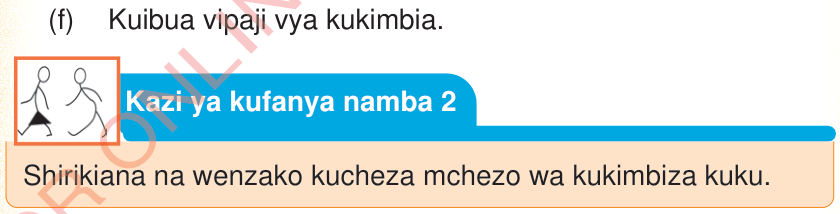

(b)
Kuku akitoka nje ya duara bila kukamatwa na mchezaji yeyote, mchezo hurudiwa;
(c)
Muda wa kukimbiza kuku ni kati ya dakika tatu hadi tano. Kama kuku hajakamatwa, wataingia wachezaji wengine kutoka kwenye timu zao;
(d)
Hairuhusiwi kumpiga teke kuku ili kumkamata;
(e)
Hairuhusiwi kumkanyaga kuku ili kumkamata; na
(f)
Kama siyo mchezaji hairusiwi kumkamata kuku hata akipita karibu yako.
Faida za mchezo wa kukimbiza kuku
Mchezo huu una faida kwa wachezaji kama vile:
(a)
Kuuchangamsha mwili;
(b)
Kujenga urafiki na ushirikiano;
(c)
Kuongeza uwezo wa kufikiri;
(d)
Kuupa mwili mazoezi ya viungo;
(e)
Kujenga ari ya kushindana; na
(f)
Kuibua vipaji vya kukimbia.


Kazi ya kufanya namba 2
Shirikiana na wenzako kucheza mchezo wa kukimbiza kuku.
Zoezi la pili
1. Je, umejisikiaje ulipocheza mchezo wa kukimbiza kuku?
2. Je, mbinu gani ulitumia kumkaribia sana kuku?
3. Kati ya kasi, akili na ustadi ni kipi kinahitajika zaidi katika mchezo wa kukimbiza kuku? Toa sababu ya jibu lako.
4. Kwa nini ni vizuri kuchagua kuku mwenye afya njema katika mchezo huu?